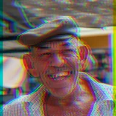

شکاف RGB

کانالهای قرمز، سبز و آبی را از هم جدا میکند: کانالی که در «مرکز» انتخاب شده سر جایش میماند و دو کانال دیگر در جهتهای مخالف در امتداد «زاویه» جابهجا میشوند. «روشن» رنگهای جابهجاشده را با هم جمع میکند، «تیره» آنها را توپر نگه میدارد، «ماسک» فقط جایی را نگه میدارد که هر سه روی هم میافتند و «لومینا» حاشیهها را به اندازهٔ روشناییشان مات میکند. «میانگین» هر نقطه را به نسبت کانالهایی که آن را میپوشانند مات میکند.
شکاف RGB کانالهای قرمز، سبز و آبی را از هم جدا میکند، مانند لنزی با حاشیه رنگی. شدت میزان جابهجایی آنها و زاویه جهت آن است. مرکز کانالی است که ثابت میماند و حالت نحوه ترکیب کانالهای جابهجا شده را تعیین میکند: روشن آنها را جمع میکند، تیره آنها را توپر نگه میدارد، ماسک فقط جایی که هر سه همپوشانی دارند را نگه میدارد و لومینا حاشیهها را به اندازه روشناییشان مات میکند.
تنظیمات
| تنظیم | نوع | بازه | پیشفرض |
|---|---|---|---|
| شدت | عدد | -8 تا 8 | 0.15 |
| زاویه | زاویه | -3600° تا 3600° | 0° |
| مرکز | انتخابی | R، G، B | G |
| حالت | انتخابی | روشن، تیره، ماسک، لومینا، میانگین | روشن |
| سبک | انتخابی | کلاسیک، استاندارد | استاندارد |